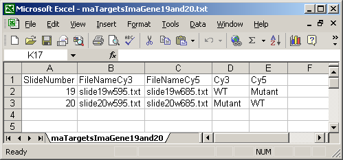
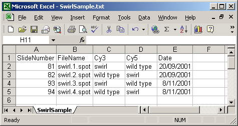
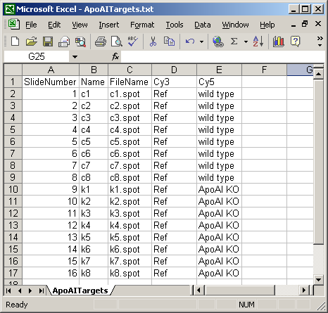
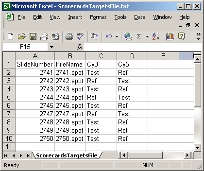
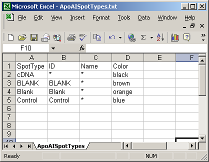
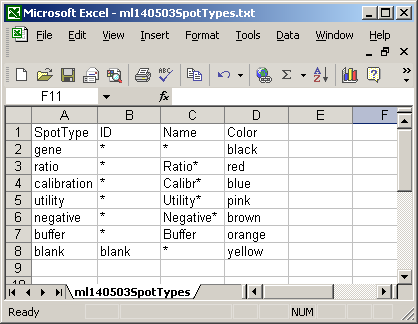

The RNA Targets file, also know as the Hybridizations file, lists the microarray hybridizations and includes for each slide, the output file from an image-analysis program such as Spot, GenePix, QuantArray, ImaGene or ArrayVision. Most testing to date has been with Spot, although both GenePix and ImaGene array data have been loaded succesfully into recent version of limmaGUI also. The Targets file should be in tab-delimited text format, as should be the output files from the image-analysis program. A Targets file has four essential columns (or five for ImaGene). The essential columns are a SlideNumber column, a FileName column, giving the file from image-analysis containing raw foreground and background intensities for each slide, a Cy3 column giving the RNA type reverse transcribed and labeled with Cy3 dye for that slide (e.g. Wild Type) and a Cy5 column giving the RNA type reverse transcribed and labeled with Cy5 dye for that slide. For ImaGene files, the FileName column is split into a FileNameCy3 column and a FileNameCy5. As well as the essential columns, you can have a Name column giving an alternative slide name to the default name, "Slide n", where n is the SlideNumber and you can have a Date column, listing the date of the hybridization, and as many extra columns as you like, as long as the column names are unique.
Some examples are shown below.
The ImaGene Targets file below shows the special case of the ImaGene image-processing software which gives two (tab-delimited text) output files for each slide, one for the Cy3 (Green) channel and one for the Cy5 (Red) channel. So instead of having a single FileName column, there are two file name columns: a FileNameCy3 column and a FileNameCy5 column.
The Date column is optional and is not currently used in limmaGUI.
A Name column can be included, giving each array a name which can be used for plotting. In this case, a short name is used so that a boxplot of all sixteen arrays can be plotted with labels for all arrays along the horizontal axis. If no Name column is given, then a default name will be given to each slide, e.g. "Slide 1".
The Targets file below is from an experiment with four different RNA sources. The main Targets file is not shown. The one below is used to analyze the spiked-in scorecard controls. Spike-in controls will generally be analyzed separately from genes because the follow different rules, e.g. for genes, the log-ratio between A and B plus the log-ratio between B and C should equal the log-ratio between A and C, but for scorecard controls, all three log (red/green) ratios may be the same.
The Spot Types file (another tab-delimited text file) is optional but it is very useful in distinguishing between genes, controls and blanks when using the Color-Coded M A Plot (with legend) feature. Certain spot types (e.g. scorecard controls) can be excluded from a linear model fit if desired. For a given spot type, e.g. "Ratio_control_*", spot sub-types "Ratio_control_1", "Ratio_control_2" can be determined automatically to give a series of box-plots comparing the moderated t-statistics or B statistics (log odds of differential expression) between the controls, which may help in deciding which genes are truly differentially expressed, i.e. what moderated t statistic is significant.
Every SpotType must have a SpotType column, for which each entry should be unique. It must also have an ID column, a Name column and a default Color column. The rows of the SpotTypes file should be read as a list of rules (in order) for defining spot types. First, we say everything is a gene, then we rename certain spots according to what is find in the ID or Name colunmn of the GAL file. The color given here is just a default color to associate with the spot type and it can modified from within limmaGUI. If you do not have a GAL file, you must construct one, i.e. a tab-delimited text file, in the format described at http://www.axon.com/gn_GAL_Examples.html. (The header is not necessary.) Future versions of limmaGUI may not require a GAL file for all image-analysis software files, but currently having a GAL file is essential.
Again, do not change the capitalization or spelling of the column names and do not insert extra spaces.
Here is a short spot types file.
Ths spot types file below defines the scorecard control spots. The asterisks are wildcards which can represent anything.
The GAL file is now optional for image-analysis file-formats which store the gene list and layout information in the raw (image-processing) results files. However, a GAL file is essential when using the (CSIRO) Spot Image Analysis format, which doesn't store any gene names or locations. The GAL file should be in tab-delimited text format. The exact format is described at http://www.axon.com/gn_GAL_Examples.html. The column names (Block, Column, Row, ID and Name) are important. Do not change their capitalization.
Make sure the image processing files are in tab-delimited text format. Do not change the capitalization of the column headings. Consult your image-analysis program manual for a description of the output files (which are input files for limmaGUI). Here's the output format for Spot: http://spot.cmis.csiro.au/spot/spotoutput.php.